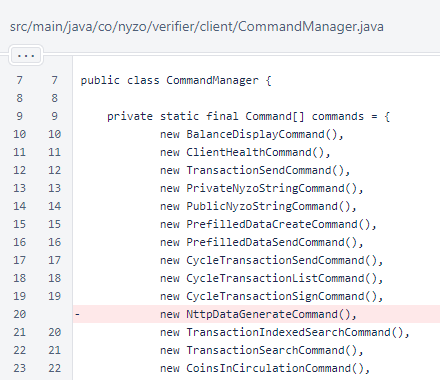
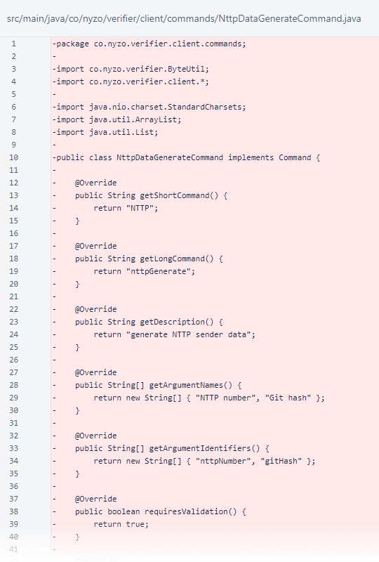

Nyzo 640: NTTP data command removal
Nyzo version 640
(commit on GitHub) removes the
NttpDataGenerateCommand.
This version affects the client.
The NttpDataGenerateCommand was added in version 559.
The command was intended to allow specification of both NTTP number and Git hash in the sender data of a cycle
transaction. However, the command was never used by the cycle, and future use seems unlikely. So, we are removing
this command to declutter the client and codebase.
The NttpDataGenerateCommand was removed from the list of commands in
CommandManager.

The NttpDataGenerateCommand class was deleted.
